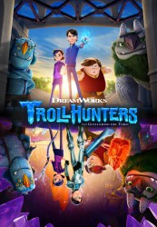

")
Alternativ: Trollhunters
 
 IMDB-Wertung: 8.5 / 10
IMDB-Wertung: 8.5 / 10  Metascore:
Metascore: 
Zwei fantastische Welten in einer epischen Saga kollidieren, als der alles andere als heldenhafte Protagonist Jim, der einem Vorort von Arcadia lebt, ein mysteriöses Amulett findet. Er macht mit seinen beiden besten Freunden die Entdeckung, dass im Untergrund ihrer Stadt ein schicksalhafter Kampf zwischen guten und bösen Trollen tobt. Der Ausgang dieses Kampfes wird das Leben der drei nachhaltig verändern.
Jahr: 2016
Dauer: 22 Minuten
FSK: 12
Land: USA Studio: NetflixTonspuren: DD5.1 - ,
Untertitel:
Auflösung: 720p (1280x720) Größe: 554 MB
Genre: Komödie, Abenteuer, Fantasy, Animation/Trick, Familie, TV-Serie
Regisseur: Rodrigo Blaas, Elaine Bogan, Andrew L. Schmidt, Johane Matte,  Guillermo del Toro, Simon Otto
Guillermo del Toro, Simon Otto
Drehbuch: Guillermo del Toro
Soundtrack:
Darsteller:
 Anton Yelchin als Jim Lake Jr., 27 episodes, 2016-2017
Anton Yelchin als Jim Lake Jr., 27 episodes, 2016-2017 Thomas F. Wilson als 12 episodes, 2016
Thomas F. Wilson als 12 episodes, 2016 Tom Kenny als 7 episodes, 2016
Tom Kenny als 7 episodes, 2016 Guillermo del Toro als 2 episodes, 2016
Guillermo del Toro als 2 episodes, 2016 Clancy Brown als 1 episode, 2016
Clancy Brown als 1 episode, 2016 Frank Welker als 10 episodes, 2016
Frank Welker als 10 episodes, 2016Datei: X:\Kinder Serien\Trolljäger\Trolljäger S01\Trolljäger S01E01.mkv seit 04.12.2017
Festplatte: Kinder-Filme+Trick
 Es gibt insgesamt 56 Filme in der Gruppe 'Kinder Serien'
Es gibt insgesamt 56 Filme in der Gruppe 'Kinder Serien'